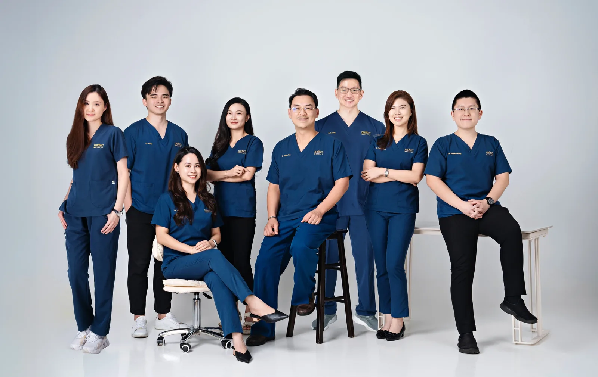
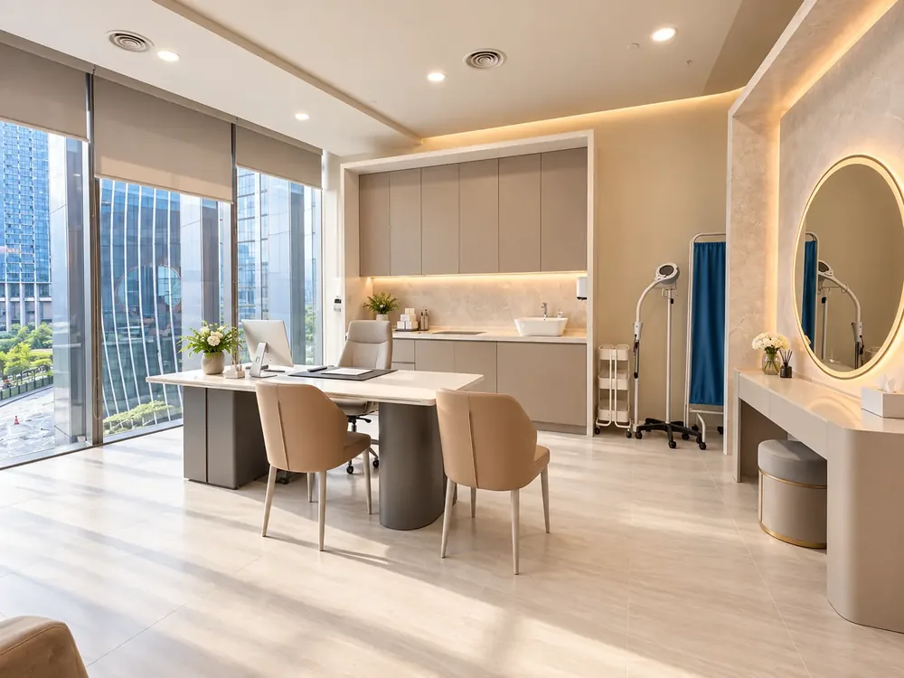

Seven doctors across four clinics, credentialed by the Ministry of Health and trained by the manufacturers of the devices and injectables they use.

Doctors
Da Vinci Clinic · Kuala Lumpur
Choose a doctor, then a branch
Hover a card to see who practises where. Tap a card on a phone.

Dr. Tristan Tan
Dr. Tristan Tan founded Da Vinci Clinic in 2006 and still leads it today. He is an LCP-certified aesthetic physician who trains other doctors across the Asia-Pacific region for Merz Aesthetics (Ultherapy), Fotona, Neauvia, Plinest and AdvaTX.
Credentials: MBBS (MAHE); Letter of Credentialing and Privileging (LCP), Ministry of Health Malaysia; American Academy of Aesthetic Medicine Certificate & Diploma; member AAAM (USA) and KCCS (Korea); Diploma in Practical Dermatology (Cardiff, UK); Trainer and speaker for Merz Aesthetics (Ultherapy), Fotona and DEKA lasers; Neauvia KOL trainer 2023; Plinest Newest KOL ambassador 2022; Cynosure PicoSure Pro and Potenza Malaysia (Cynoglow) MBR 2022.
“I sculpt beauty with precision and passion, enhancing each individual’s unique allure.”
Dr. Wong Yeut Sun
Dr. Wong leads the clinical team at Bukit Jalil. Trained in Taiwan and credentialed under Malaysia’s LCP framework, he has spent over a decade refining non-surgical facelift, laser and injectable techniques and is recognised internationally as a Key Opinion Leader for Fotona StarWalker.
Credentials: MD (NDMC, Taiwan); Medical Aesthetic Certificate (MAC) 2018; Postgraduate Diploma in Dermatology (AFPM) 2019; Letter of Credentialing and Privileging (LCP), Ministry of Health Malaysia; International KOL for Fotona StarWalker PQX; Merz Aesthetics trainer 2024; Life member, Malaysian Medical Association.
“Aesthetic transformation is my canvas; patient happiness is my masterpiece.”
Dr. Joycelyn Loh
With over a decade in aesthetic medicine, Dr. Joycelyn focuses on personalised treatment plans that help patients age gracefully and confidently, treating each person as a partner in the process.
Credentials: MBBS (AIMST) (Hons); Malaysia Aesthetic Certificate (MAC): dermal fillers, botulinum toxin A, medical lasers, chemical peel, microdermabrasion, skin tightening devices, mesotherapy, basic dermatology; Certification in non-surgical face and nose thread lifting; Member, Malaysian Society of Aesthetic Medicine (MSAM); LCP-certified.
“Enhancing your natural charm with care and expertise.”

Dr. Tang Yee Li
Dr. Yeeli brings a precise, detail-focused approach to every treatment, trained in Moscow and certified across injectables and polynucleotide skin boosters. Patients often mention her light hand during injection-based treatments.
Credentials: MD (I.M. Sechenov First Moscow State Medical University); Medical Aesthetic Certificate (MAC) 2021; Member, American Academy of Aesthetic Medicine (AAAM) 2020; Certified user: Plinest Newest (Mastelli), Juvederm injectables, Belotero fillers; Neauvia PEG filler workshop 2022; Life member, Malaysian Medical Association.
“Aesthetics is a symphony where art and science unite.”

Dr. Kenneth Wong
Dr. Kenneth leads the clinical team at TRX. Known for pairing genuine warmth with a steady, detail-focused hand, several long-time patients have followed him to the newly opened branch for the same thorough, honest consultations.
Credentials: MBBS (MAHSA); Medical Aesthetic Certification (MAC) 2023; Member, American Academy of Aesthetic Medicine (AAAM) 2023; Aptos Global Video Competition 2023, Asia Top 4; Aptos Advanced Conference 2023; Facet Workshop 3 (Allergan Aesthetics) 2023; Da Vinci delegate at IMCAS Asia Bangkok 2023; LCP-certified.
“Aesthetic dreams come alive through heart, hands, and science.”

Dr. Ho Shuyan
Dr. Ho is known for a gentle, detail-oriented approach and the belief that beauty should look refined, natural and harmonious. Every recommendation is guided by the principle of less is more.
Credentials: MD (UMS); Letter of Credentialing and Privileging (LCP), Ministry of Health Malaysia; Malaysia Aesthetic Certificate (MAC): dermal fillers, botulinum toxin A, medical lasers, chemical peel, microdermabrasion, skin tightening devices, basic dermatology, mesotherapy.
“I refine natural beauty with gentle precision, so my patients feel confidently themselves.”
Dr. Lee Mao Sheng
Dr. Lee is trained under the Malaysia Aesthetic Certificate and certified across medical lasers, dermal fillers, botulinum toxin, mesotherapy and skin-tightening technologies. He focuses on treatments that enhance rather than change who you are.
Credentials: MD (MUCM); Malaysia Aesthetic Certificate (MAC); Certification in medical lasers, dermal fillers, botulinum toxin, skin tightening devices and mesotherapy.
“Confidence is built step by step. My role is to enhance your best features with discipline and precision.”

Dr. Khoo Kay Wai
A plastic and reconstructive surgeon on Malaysia’s National Specialist Register, Dr. Khoo consults at Da Vinci Clinic on scheduled days for patients whose goals call for a surgical opinion.
Credentials: MD (Crimea State Medical University); Master of Surgery (Plastic Surgery), Universiti Sains Malaysia; National Specialist Register (Plastic Surgery), Malaysia; MSPRS, MAPACS, ASPS (international member), ISAPS, MMA.
Questions about our doctors
The Letter of Credentialing and Privileging is the Ministry of Health Malaysia’s standard for aesthetic practitioners. It marks high-level training and experience.
Yes. Tell the branch which doctor you would like to see when you book, subject to their schedule.
Dr. Tristan Tan, Dr. Ho Shuyan and Dr. Lee practise at Mid Valley; Dr. Wong and Dr. Yeeli at Bukit Jalil; Dr. Joycelyn at Cheras; Dr. Kenneth at TRX. Doctors may rotate, so confirm when booking.
Dr. Khoo Kay Wai, a plastic and reconstructive surgeon, consults as a visiting specialist on scheduled days.

Start your beauty journey today
Every treatment begins with an honest clinical consultation at any of our four Kuala Lumpur clinics. No pressure, no upselling.
Book a consultation